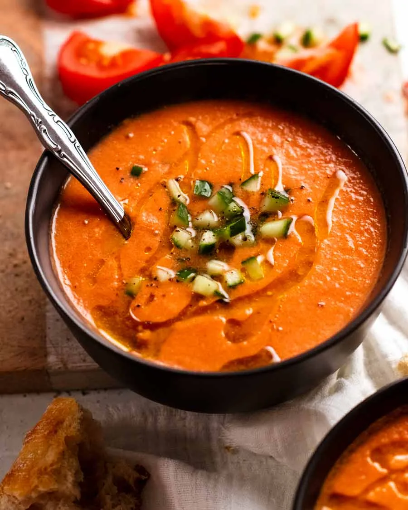

Gazpacho!

Make Delicious Gazpacho
Gazpacho is a cold soup made from blended raw vegetables, mainly tomatoes, cucumbers, peppers, onions, and garlic, mixed with olive oil, vinegar, and bread. It’s refreshing and typically served chilled.
Ingredients
- 1 kg ripe tomatoes
- 1 cucumber
- 1 bell pepper
- 2 garlic cloves
- 1/4 cup red onion
- 1/4 cup extra virgin olive oil
- 1 1/2 tbsp sherry vinegar
- 3/4 tsp salt
- 1/2 tsp black pepper
Steps
- Marinate – Toss all the gazpacho ingredients together in a large bowl. Cover then set aside to marinate, preferably 12 to 24 hours, or at least 3 hours.
- Blitz – Transfer everything into a blender and blitz on high until smooth. (Or use a tall jug with a hand blender). For 100% perfectly smooth, pass through a fine mesh strainer or food mill and discard solids
- Serve – Pour into a bowl. Rest for 15 minutes to let the bubbles subside. Stir, then ladle into bowls.
- Garnish – Top with diced cucumber, if using, and a swish of olive oil. Serve with crusty bread!